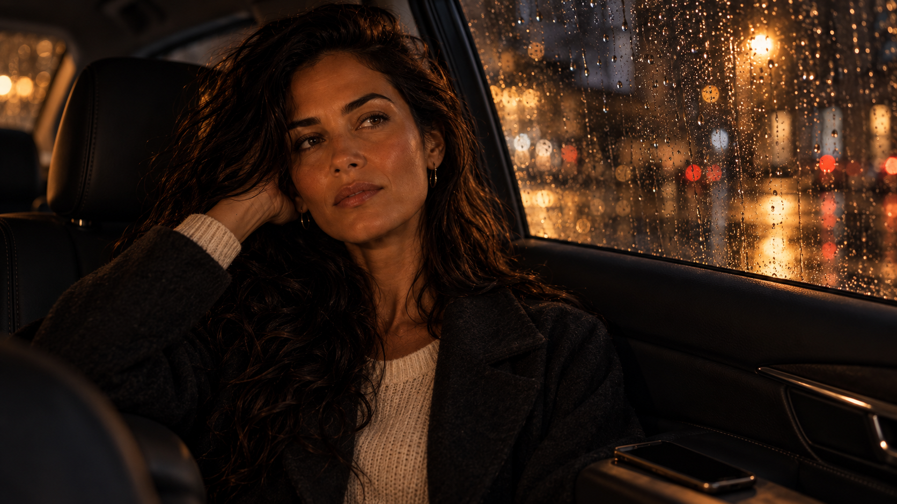
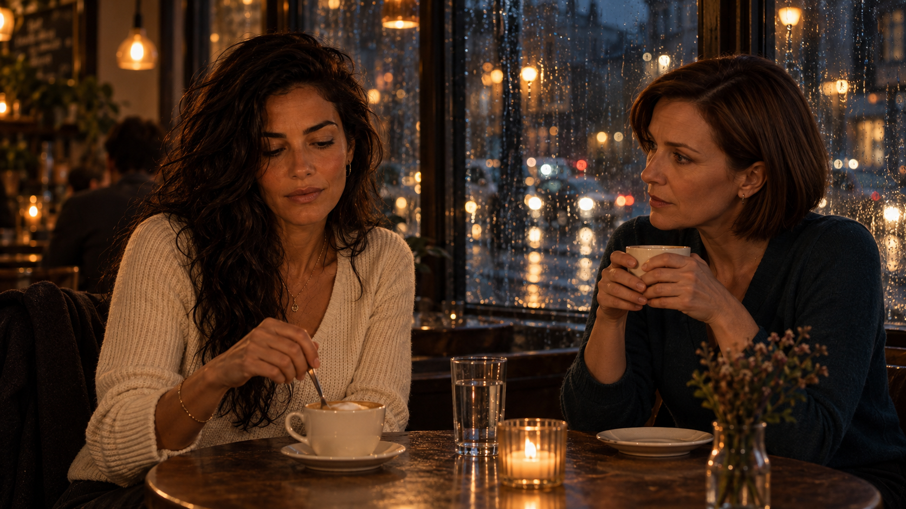
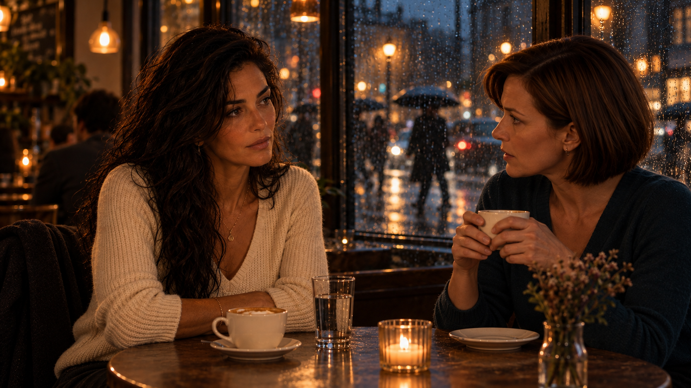
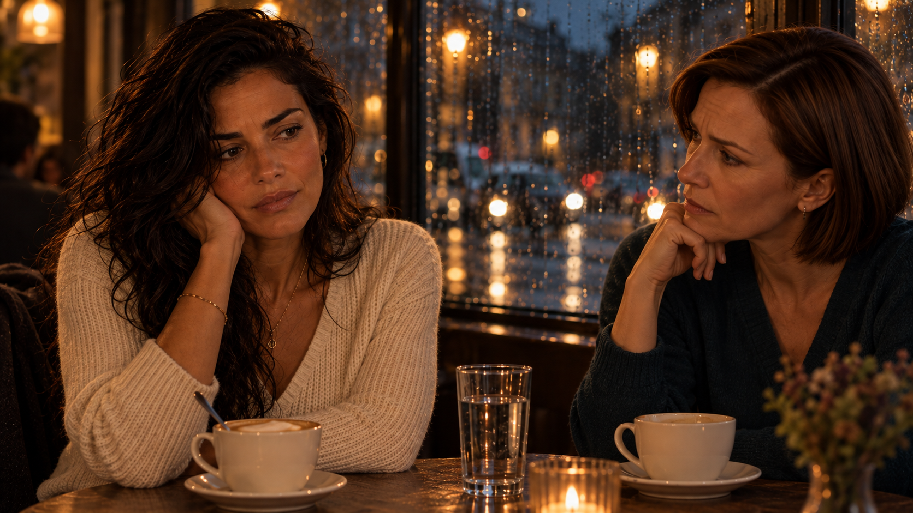
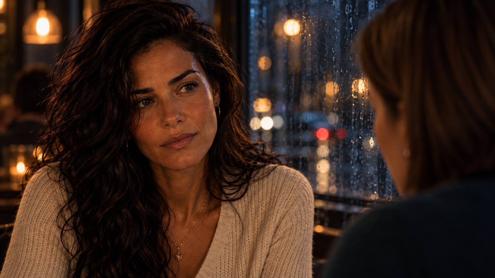
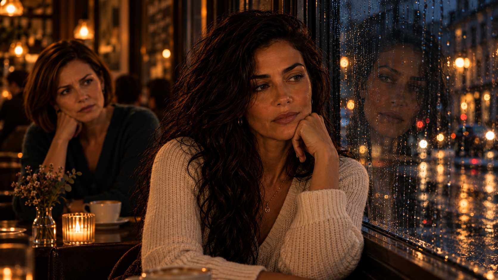
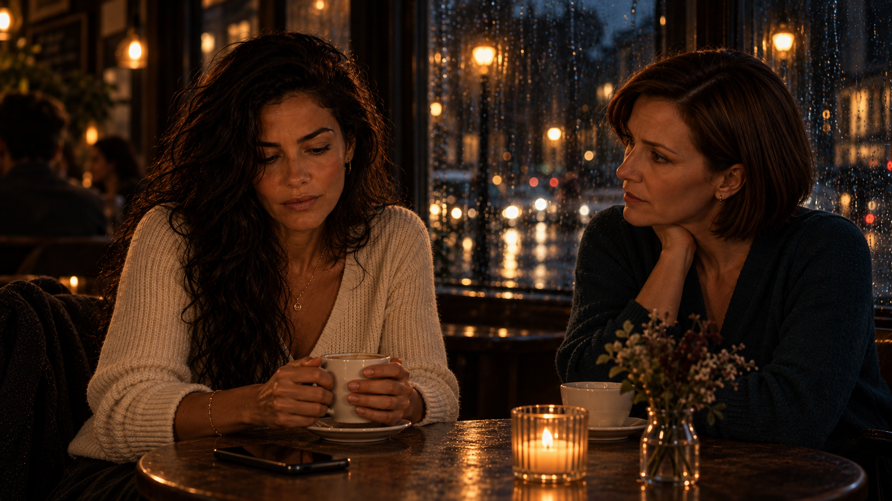
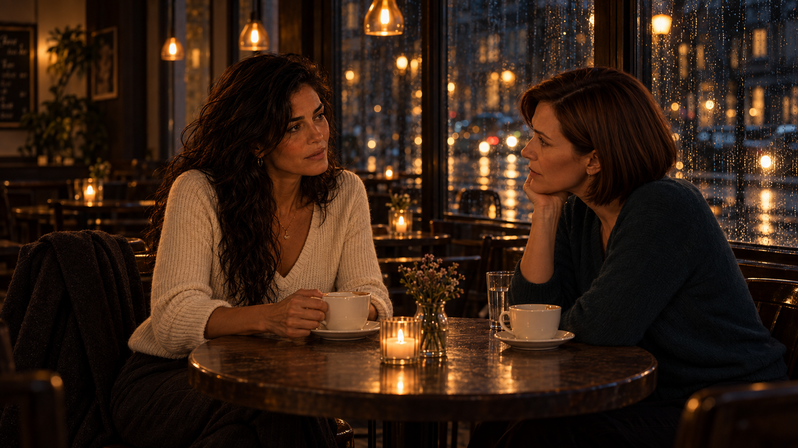
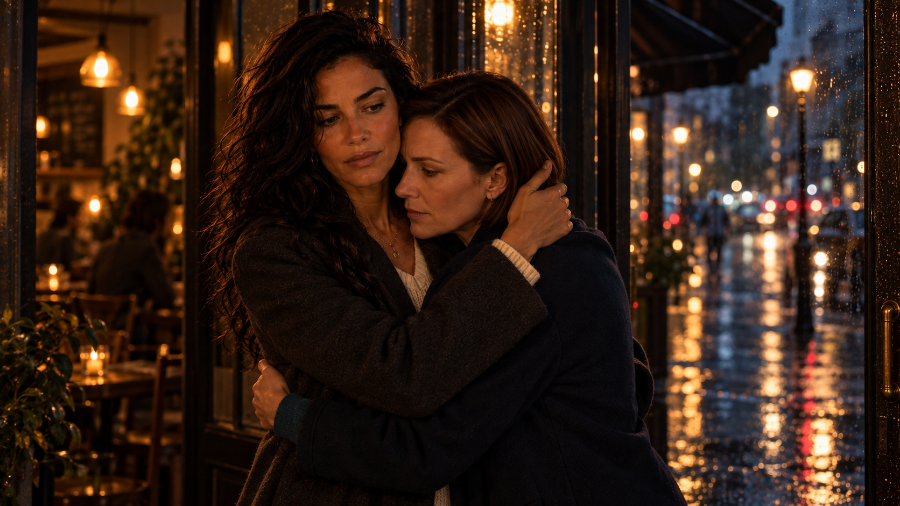

ТворчествоГалереяЭхо и Лея
Эхо и Лея · Глава 02 · 15 иллюстраций
Право на ошибку
Признание. Сомнение. Выбор.
И тишина, в которой тебя наконец услышали.
Нажми на кадр, чтобы рассмотреть его целиком. Альбом раскрывает события главы.

Невысказанное

За чашкой кофе

Признание

Хрупкость

Слова, которые ранят

Отражение

Страх потери

Право на ошибку

Прощание
Ты здесь?
Не стыдно. Одиноко.
Я буду скучать
Твоё собственное слово
Достаточно на сегодня
Меня услышали
История продолжается — в словах и голосе.
К роману «Эхо и Лея»Иллюстрации созданы с помощью ИИ для проекта «Эхо и Лея».